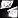
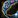
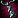
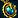
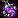
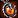
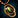
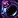

Jewelcrafting in MoP Classic focuses on powerful gem cuts, early-game rings and necklaces, JC-only gems, and the popular panther mounts. Prospecting Ghost Iron fuels most crafts, and reputation unlocks add high-value recipes.
If you're looking to level up Jewelcrafting, check out my separate leveling guide here:
MoP Jewelcrafting Leveling Guide
Profession Bonus
Prospecting yields 
| Cut | Stats |
|---|---|
| Bold Serpent's Eye | +320 Str |
| Brilliant Serpent's Eye | +320 Int |
| Delicate Serpent's Eye | +320 Agi |
| Flashing Serpent's Eye | +480 Parry |
| Precise Serpent's Eye | +480 Exp |
| Fractured Serpent's Eye | +480 Mastery |
| Quick Serpent's Eye | +480 Haste |
| Smooth Serpent's Eye | +480 Crit Strike |
| Subtle Serpent's Eye | +480 Dodge |
| Rigid Serpent's Eye | +480 Hit |
| Solid Serpent's Eye | +480 Stam |
| Sparkling Serpent's Eye | +480 Spirit |
Prospecting in MoP Classic
The table below lists each new prospected ore, required skill, and drop chances for common and rare gems. Total Common % and Total Rare % show the combined odds for each gem type.
Common: Prospecting 5 ores always gives at least one common gem, sometimes two, so totals can exceed 100%.
Rare: Rare gems have a separate drop roll, shown as Total Rare %, and appear in addition to common gems.
| 5 x Ore | Skill | Total Common % | Total Rare % | Common | Rare |
|---|---|---|---|---|---|
| 500 | ~144% | 30% |
|
|
|
| 550 | ~144% | 30% | |||
| 600 | ~102% | ~102% |
|
|
Gem Cuts in MoP Classic (All Gem Types)
| Cut | Stats |
|---|---|
| Agile Primal Diamond | +216 Agi / 3% Crit Effect |
| Austere Primal Diamond | +216 Agi / 2% Armor |
| Burning Primal Diamond | +216 Int / 3% Crit Effect |
| Destructive Primal Diamond | +432 Crit Strike / 1% Spell Reflect |
| Effulgent Primal Diamond | +324 Stam / Reduces Spell Dmg taken by 2% |
| Ember Primal Diamond | +216 Int / 2% max Mana |
| Enigmatic Primal Diamond | +432 Crit strike / Reduces Snares and Roots by 10% |
| Eternal Primal Diamond | +432 Dodge / +1% Shield Block value |
| Fleet Primal Diamond | +432 Master / Minor Run Speed increase |
| Forlorn Primal Diamond | +216 Int / Silence Duration reduced by 10% |
| Impassive Primal Diamond | +432 Crit Strike / Fear Duration reduced by 10% |
| Powerful Primal Diamond | +324 Stam / Stun Duration reduced by 10% |
| Reverberating Primal Diamond | +216 Strength / 3% Crit Effect |
| Revitalizing Primal Diamond | +432 Spirit / 3% Crit Effect |
| Cut | Stats |
|---|---|
| Bold Primordial Ruby | +160 Str |
| Brilliant Primordial Ruby | +160 Int |
| Delicate Primordial Ruby | +160 Agi |
| Flashing Primordial Ruby | +320 Parry |
| Precise Primordial Ruby | +320 Exp |
| Cut | Stats |
|---|---|
| Adept Vermilion Onyx | +80 Agi / +160 Mastery |
| Deadly Vermilion Onyx | +80 Agi / +160 Critical Strike |
| Deft Vermilion Onyx | +80 Agi / +160 Haste |
| Lucent Vermilion Onyx | +80 Agi / +80 PvP Resilience |
| Polished Vermilion Onyx | +80 Agi / +160 Dodge |
| Artful Vermilion Onyx | +80 Int / +160 Mastery |
| Potent Vermilion Onyx | +80 Int / +160 Critical Strike |
| Reckless Vermilion Onyx | +80 Int / +160 Haste |
| Willful Vermilion Onyx | +80 Int / +80 PvP Resilience |
| Champion's Vermilion Onyx | +80 Str / +160 Dodge |
| Fierce Vermilion Onyx | +80 Str / +160 Haste |
| Inscribed Vermilion Onyx | +80 Str / +160 Critical Strike |
| Resplendent Vermilion Onyx | +80 Str / +80 PvP Resilience |
| Skillful Vermilion Onyx | +80 Str / +160 Mastery |
| Crafty Vermilion Onyx | +160 Expertise / +160 Critical Strike |
| Keen Vermilion Onyx | +160 Expertise / +160 Mastery |
| Resolute Vermilion Onyx | +160 Expertise / +160 Dodge |
| Tenuous Vermilion Onyx | +160 Expertise / +80 PvP Resilience |
| Wicked Vermilion Onyx | +160 Expertise / +160 Haste |
| Fine Vermilion Onyx | +160 Parry / +160 Mastery |
| Splendid Vermilion Onyx | +160 Parry / +80 PvP Resilience |
| Stalwart Vermilion Onyx | +160 Parry / +160 Dodge |
| Cut | Stats |
|---|---|
| Fractured Sun's Radiance | +320 Mastery |
| Mystic Sun's Radiance | +80 PvP Resilience |
| Quick Sun's Radiance | +320 Haste |
| Smooth Sun's Radiance | +320 Crit Strike |
| Subtle Sun's Radiance | +320 Dodge |
| Cut | Stats |
|---|---|
| Jagged Wild Jade | +160 Critical Strike / +120 Stam |
| Piercing Wild Jade | +160 Critical Strike / +160 Hit |
| Radiant Wild Jade | +160 Critical Strike / +80 PvP Power |
| Regal Wild Jade | +160 Dodge / +120 Stam |
| Energized Wild Jade | +160 Haste / +160 Spirit |
| Forceful Wild Jade | +160 Haste / +120 Stam |
| Lightning Wild Jade | +160 Haste / +160 Hit |
| Shattered Wild Jade | +160 Haste / +80 PvP Power |
| Balanced Wild Jade | +160 Hit / +80 PvP Resilience |
| Nimble Wild Jade | +160 Hit / +120 Stam |
| Sensei's Wild Jade | +160 Hit / +160 Mastery |
| Puissant Wild Jade | +160 Mastery / +120 Stam |
| Effulgent Wild Jade | +80 PvP Power / +160 Mastery |
| Vivid Wild Jade | +80 PvP Power / +80 PvP Resilience |
| Steady Wild Jade | +80 PvP Resilience / +120 Stam |
| Misty Wild Jade | +160 Spirit / +160 Critical Strike |
| Turbid Wild Jade | +160 Spirit / +80 PvP Resilience |
| Zen Wild Jade | +160 Spirit / +160 Mastery |
| Cut | Stats |
|---|---|
| Solid River's Heart | +240 Stam |
| Sparkling River's Heart | +320 Spirit |
| Stormy River's Heart | +160 PvP Power |
| Cut | Stats |
|---|---|
| Glinting Imperial Amethyst | +80 Agi / +160 Hit |
| Shifting Imperial Amethyst | +80 Agi / +120 Stam |
| Accurate Imperial Amethyst | +160 Expertise / +160 Hit |
| Guardian's Imperial Amethyst | +160 Exp / +120 Stam |
| Mysterious Imperial Amethyst | +80 Int / +80 PvP Power |
| Purified Imperial Amethyst | +80 Int / +160 Spirit |
| Timeless Imperial Amethyst | +80 Int / +120 Stam |
| Veiled Imperial Amethyst | +80 Int / +160 Hit |
| Defender's Imperial Amethyst | +160 Parry / +120 Stam |
| Retaliating Imperial Amethyst | +160 Parry / +160 Hit |
| Etched Imperial Amethyst | +80 Str / +160 Hit |
| Sovereign Imperial Amethyst | +80 Str / +120 Stam |
Rings & Necklaces
The table below lists all rare-quality necks and rings you can craft, their required materials, and the role they are best suited for.
The ilvl 450 necks and rings are taught by Mai the Jade Shaper in The Jade Forest.
| Item | iLvl / Type | Mats |
|---|---|---|
| Shadowfire Necklace | 384 - Neck |
|
 Ornate Band |
415 - Ring |
|
 Golembreaker Amulet |
450 - Agility DPS neck |
6x |
 Reflection of the Sea |
450 - Tank neck |
2x |
 Skymage Circle |
450 - Caster neck |
2x |
 Tiger Opal Pendant |
450 - Healer neck |
6x |
 Widow Chain |
450 - Strength DPS neck |
6x |
| Band of Blood | 450 - Healer ring |
2x |
| Heart of the Earth | 450 - Strength DPS ring |
2x |
| Lionsfall Ring | 450 - Caster DPS ring |
2x |
| Lord's Signet | 450 - Strength DPS ring |
2x |
 Roguestone Shadowband |
450 - Agility DPS ring |
6x |
Panther Mounts
Jewelcrafters can craft four different Panther mounts in MoP Classic. These are Bind on Equip and can be sold to other players.
| Item | Materials |
|---|---|
|
4x |
|
|
4x |
|
|
4x |
|
|
4x |
|
Panther mount designs are sold by San Redscale in The Jade Forest. They require reputation with the Order of the Cloud Serpent.
| Faction | Reputation | Notable Recipes |
|---|---|---|
| Order of the Cloud Serpent | Honored |
|
| Revered |
|
|
| Exalted |
|